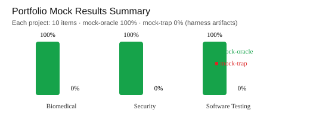

By Yazan Aljabari · MIT License
Three verification-oriented evaluation projects demonstrating AI/LLM evaluation design, research methodology, Python implementation, and evidence-based reporting.

HRV and signal-processing reasoning items with code-derived verification and shortcut traps.
Project README · Oracle report · Trap report
HRVDSPPythonRFC/FIRST/NIST-grounded security evaluation items (OTP, entropy, CVSS, Argon2, policy).
Project README · Oracle report · Trap report
SecurityStandardsTest design and quality engineering items (BVA, SemVer, pairwise, mutation, SLOs).
Project README · Oracle report · Trap report
TestingQualityNote: included pass rates are from mock-oracle/mock-trap harness runs, not real-model benchmarks.